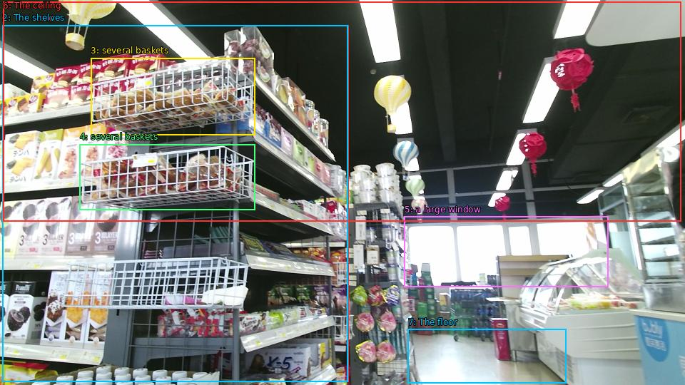

The image shows the interior of a grocery store. The store appears to be well-stocked with various items for sale. On the left side of the image, there are shelves stocked with food items such as snacks, drinks, and other grocery items. The shelves are arranged in a neat and orderly manner, and there are several baskets on the shelves. In the background, there is a large window that lets in natural light. The ceiling is decorated with colorful paper lanterns hanging from it. The floor is tiled, and the overall atmosphere of the store is bright and cheerful.

Original · Caption raw · Grounding raw · Koordinate
Številke so lokalni ID regije. Dolge slikovne oznake so skrajšane; spodaj so celotne fraze. Napovedane regije se lahko prekrivajo ali opisujejo skupine.
| ID | Celotna fraza | bbox xyxy |
|---|---|---|
| 1 | The store | [3.359999895095825, 35.37000274658203, 488.1600036621094, 535.9500122070312] |
| 2 | The shelves | [3.359999895095825, 35.37000274658203, 487.1999816894531, 535.9500122070312] |
| 3 | several baskets | [127.19999694824219, 81.27000427246094, 357.6000061035156, 189.27000427246094] |
| 4 | several baskets | [111.83999633789062, 202.23001098632812, 357.6000061035156, 294.0299987792969] |
| 5 | a large window | [566.8800048828125, 303.75, 852.9599609375, 402.57000732421875] |
| 6 | The ceiling | [4.319999694824219, 2.430000066757202, 954.719970703125, 310.2300109863281] |
| 7 | The floor | [571.6799926757812, 461.97003173828125, 793.4400024414062, 537.5700073242188] |